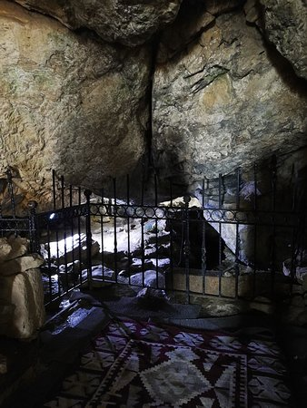

Eshâb-ı Kehf, pagan kültürden Hıristiyanlığa, oradan da Müslümanlığa uzanan bir süreçte farklı kültürlerin etkileşimine örnek olan bir anlatıdır. Ortaçağ boyunca Hristiyan ve İslam dünyasında bilinen anlatıya göre: Efsus ya da Yarpuz denilen bir şehirde, Roma İmparatoru Dakyanus (Dakyus) adında zalim bir hükümdar halkı kendisine ve putlara taptırırmış (MS 250). Mitolojik Tanrılara inanışın gücünü yitirdiği bir dönemde, tek Tanrıya inandıkları için eziyet edilmekten kaçan Hristiyan dinine mensup Yemliha, Mekseline, Mislina, Mernuş, Sazenuş, Tebernuş ve Kefeştetayuş adında yedi genç ise gizlice ibadet ederek bu zalimin buyruğu dışına çıkmış. Bunu haber alan Dakyanus’tan kaçan gençler, kendileri gibi inançlı bir çobana rastlarlar. Çobanın bildiği ve yanında su olan bir mağaraya sığınan Eshab-ı Kehf burada uykuya dalar. Eshab-ı Kehf, bir rivayete göre, 309 yıl uyur vaziyette kalır. Doğu Roma İmparatoru II. Theodosius döneminde (MS 408-450) huzur ortamında uyanırlar. İmparator, yedi kişinin yaşadığı deneyimin derin anlamından etkilenir ve anılarına bir kilise inşa edilmesini emreder.
Eshab-ı Kehf Külliyesi Kahramanmaraş’ın Afşin ilçesinde yer alır. Burada yedi arkadaşa ithaf olarak inşa edilen külliye, Antik Çağ’dan beri kutsal sayılan ve Eshab-ı Kehf adıyla tanınan kayalık bir tepenin yamacındaki mağaranın çevresine kurulmuştur. Kur’ân-ı Kerîm’de, mağarada yıllarca uyuyan arkadaşların uyandırıldıktan kısa bir süre sonra vefat ettiği ve bu olaya şahit olan insanlar tarafından mağaranın yanına mescit (kilise) yapıldığı ifade edilir.
Farklı din ve uygarlıkların buluşma noktası olan alanda her bir uygarlık kendi inanışları açısından alana istisnai bir değer katmış ve kendi yapılarını ekleyerek bu kutsal alanı yaşatmışlardır. Külliyede Doğu Roma, Selçuklu, Dulkadiroğlu Beyliği ve Osmanlı Devleti dönemlerine ait izlere rastlamak mümkündür.
Kaynaklardan anlaşıldığına göre bu kiliseyi Bizans İmparatoru II. Theodoius (408-450) yaptırmış. Daha sonraları “İsa Mescidi” ismiyle bilinen ve zamanla harabeye dönen bu kilisenin üzerine Anadolu Selçuklularının Maraş Emîri olan Nusretüddin Hasan Bey, 1215 - 1234 yılları arasında, içinde bugünkü caminin de bulunduğu bir dizi inşaat yaptırmıştır. Kilisenin bazı malzemelerinin de bu caminin inşaatında kullanıldığı, kutsal mağara ile caminin uyumlu bir şekilde kaynaştırıldığı görülür. Nusretüddin Hasan Bey’in inşa ettirdiği bu külliyenin diğer yapıları; ziyaretçilerin ihtiyaçlarının karşılanması ve konaklamalarının sağlayan ribat (sınır boylarında ve stratejik mevkilerde askerî amaçlı kullanılan yapılar) (1215) ve handır (1233). Daha sonra, Dulkadir Beyliği döneminde yapılan medrese (1480-1492) ve kadınlar mescidiyle (1500) külliye büyütülür. Paşa Çardağı ise, Osmanlılar döneminde 1531 yılında inşa edilir.
Eshab-ı Kehf olayı Hristiyan ve İslâm dünyasında canlılığını tarih boyunca korumuş bir olgudur. Olayın öneminden dolayı Kur’an-ı Kerim’in 18. suresi “Kehf” adını taşır ve orada neler yaşandığı anlatılır. Hristiyanlar ise “Yedi Uyurlar”ı aziz olarak kabul ederler. Eshab-ı Kehf Külliyesi 2015 yılında UNESCO Dünya Miras Geçici Listesine kaydedilmiştir.